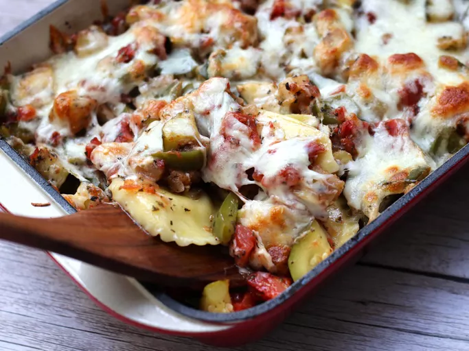

Ratatouille recipe

Ingredients
- 1 tablespoon olive oil
- 5 cloves garlic, minced
- 1 onion, chopped
- 2 cups peeled and diced eggplant
- 2 cups chopped zucchini
- 1 green bell pepper, chopped
- 1 (14.5 ounce) can diced tomatoes
- 1 tablespoon dried basil
- 1 tablespoon dried parsley
- ½ teaspoon salt
- ⅛ teaspoon black pepper
- 1 (8 ounce) package frozen cheese ravioli
- ¾ cup shredded mozzarella cheese
Instructions
- Preheat oven to 350 degrees F (175 degrees C); spray a 2 1/2-quart baking dish with cooking spray.
- Heat the olive oil in a large skillet over medium heat; cook and stir the garlic, onion,
and eggplant with the garlic until the vegetables have begun to soften, about 8 minutes.
Stir in the zucchini, bell pepper, tomatoes, basil, parsley, salt, and black pepper;
bring the mixture to a boil, stirring frequently. Reduce heat to medium-low and simmer
until the vegetables are tender, about 20 minutes.
- Cook the frozen ravioli as directed on the package; drain. Spread the cooked ravioli in a layer into
the bottom of the prepared baking dish; spoon the hot vegetables over the ravioli. Sprinkle with the cheese.
- Bake in the preheated oven until the casserole is bubbling and the cheese is melted, about 20 minutes.